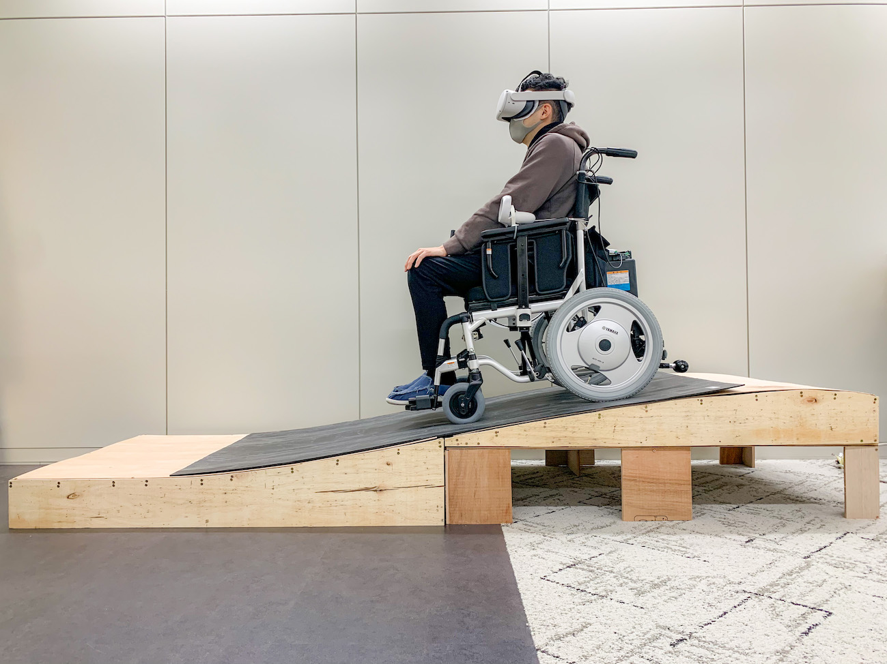

VRライドと障害物によるアトラクション体験要素の増幅

VRライドと障害物によるアトラクション体験要素の増幅
本研究では、大規模な専用の施設を用いない位置・姿勢変化の発生するアトラクションを実現するにあたり、HMDと電動車椅子で構成したVR（Virtual Reality）ライドに小規模な坂道や障害物を組み合わせることで、アトラクション体験の要素である衝突、降下、上昇体験を増幅させる手法を提案する。
MOVIE
3つのアトラクションを体験している様子
ABOUT
Graduation thesis
2021
CREDIT
Concept, Software and Hardware Enginnering: Shunta Ito
Academic Adviser: Yasuto Nakanishi